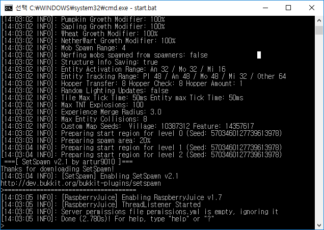
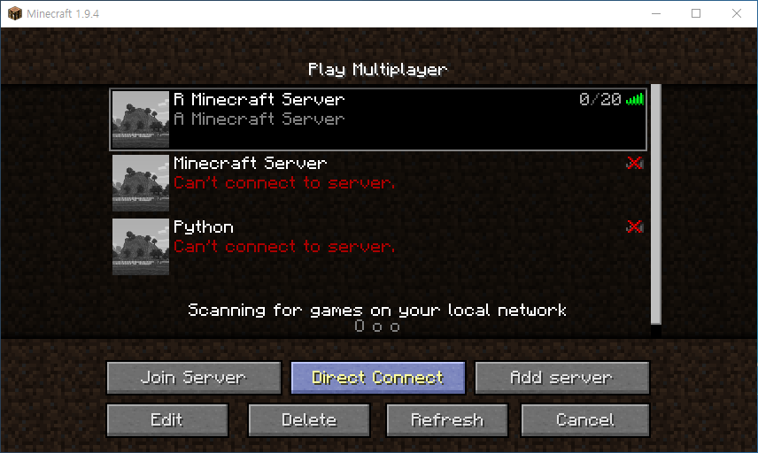
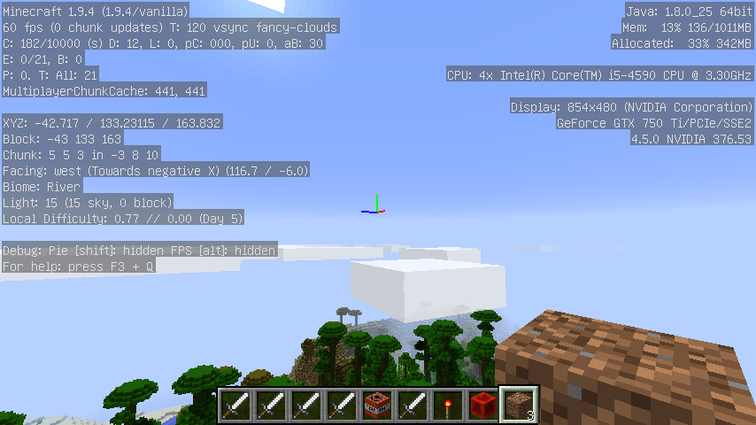

xwMOOC 데이터과학
1. R 마인크래프트
miner: R package for controlling Minecraft via API 팩키지가 개발되어 R을 활용한 마인크래프트 도전이 가능하게 되었습니다. 마인크래프트 서버를 통해 마인크래프트 R 코딩을 하기 위해서 사전에 설정된 두가지 방법이 존재한다.
- Wiley 출판사, Adventures in Minecraft 방법: 1.6.4 버젼 지원.
- No Starch 출판사, Learn to Program with Minecraft - Transform Your World with the Power of Python 방법: 마인크래프트 1.9.4 버젼 이상 설치
윈도우 10 버젼을 사용하는 경우 Learn to Program with Minecraft - Transform Your World with the Power of Python 방식을 추천한다. 일부 명령어가 Wiley 출판사, Adventures in Minecraft에서 정상동작하지 않는 문제가 있을 수 있다.
2. R 마인크래프트 설치
2.1. 버킷서버 1.6.4. Wiley 출판사 설치 방법
마인크래프트에 R로 작성한 코드를 돌리기 위해서 크게 3가지 구성요소가 필요하다.
- 마인크래프트 서버 설치
- 마인크래프트 클라이언트 (즉, 마인크래프트 게임) 설치
- R에서 API를 통해 마인크래프트 서버에 접속
2.1.1. 마인크래프트 서버 설치
Wiley 출판사, Adventures in Minecraft책은 파이썬을 이용한 마이크래프트 프로그래밍을 학습할 수 있다.
마인크래프트 PC Bukkit 서버를 다운로드 받아 압축을 풀어 StartBukkit.bat를 실행하게 되면 쉽게 마인크래프트 서버를 본인 PC에 설치할 수 있다. 물론, 맥을 비롯해 라즈베리파이에도 동일한 방식으로 쉽게 설치할 수 있다. 웹사이트에서 설치 동영상도 제공하니 찬찬히 살펴보고나서 직접 따라하는 것도 좋을 듯 하다.

2.1.2. 마인크래프트 클라이언트 (즉, 마인크래프트 게임) 설치
라즈베리파이를 소지한 경우 라즈비언을 설치하게 되면 무료 마인크래프가 포함되어 있어 문제가 없다. 하지만, 모바일 Pocket Minecraft, 윈도우 10 버젼 마인크래프트는 지원이 되지 않기 때문에 꼭 PC 버젼 minecraft.net을 통해 구매를 한 버젼을 사용한다. 저자와 같이 두번 결재를 하고 돈을 돌려받지 못한 경험은 하지 않았으면 좋겠다. 윈도우 10으로 구매를 하면 더 비싸기도 하다. 그리고 돈을 돌려달라고 여러번 의견을 표현해도 묵묵부답이다. 윈도우 10 스토어를 통한 구매는 비추한다.
minecraft.net에서 구매를 하게 되면 마인크래프트 론쳐(launcher)가 윈도우 바탕화면에 설치된다. 마인크래프트 론쳐에서 위에서 설치한 마인크래프트 서버에 접속한다는 강력한 의사를 전달해야 한다. 상기 마인크래프트 버킷서버가 1.6.4를 지원하기 때문에 론처에서 설정을 하고 나서 앞서 실행시킨 서버에 접속을 한다.

2.2. Spigot 서버 1.9.4. No Starch 출판사 설치 방법
앞선 방법과 순서는 유사하다. 다만 버킷 서버 대신에 Spigot 서버가 사용된다는 면에서 차이가 나고 자바설치를 확인하면 된다.
- 자바 설치 확인
- Spigot 마인크래프트 서버 설치
- 마인크래프트 클라이언트 (즉, 마인크래프트 게임) 설치
- R에서 API를 통해 마인크래프트 서버에 접속
설치과정에서 중요한 내용만 확인하면 다음과 같다.
Learn to Program with Minecraft 사이트를 방문하여 하단에 윈도우의 경우 Minecraft Tools.zip, Minecraft Tools Mac.zip 파일을 다운로드 받는다.
- Download the setup files for Windows (Minecraft Tools.zip)
- Download the setup files for Mac OS (Minecraft Tools Mac.zip)
압축을 풀면 Minecraft Tools 폴터 아래 install_API.bat 파일을 실행하면 Spigot 마인크래프트 서버 설치를 수행한다. Start_Server를 실행하면 서버가 실행된다.

2.2.1. Spigot 마인크래프트 접속
마인크래프트 론쳐에서 마인크래프트 1.9.4 버젼으로 설정하고 localhost로 접속을 하게 되면 된다. Spigot 마인크래프트 서버는 1.6.4 버젼은 지원을 중단한 것으로 보인다.

2.3. R에서 마인크래프트 서버에 접속
R에서 API를 통해 마인크래프트에 접속하는 것은 초딩도 한다는 R 프로그래밍에 경험이 조금만 있다면 쉽게 할 수 있다.
miner 팩키지를 설치하고 나서, mc_connect("127.0.0.1") 명령어를 통해 로컬 컴퓨터에 접속한다. 그리고 chatPost 명령어를 통해 채팅을 통해 헬로월드를 통해 R코드를 마인크래프트에 정상적으로 전송할 수 있음을 확인한다.
devtools::install_github('ropenscilabs/miner')
library(miner)
mc_connect("127.0.0.1")
chatPost("안녕하세요...")
3. 마인크래프트 프로그래밍 정보
마인크래프트를 실행한 후에 윈도우에서는 F3를 클릭(노트북이나 맥에서 Fn+F3)하게 되면 디버그 화면에서 좌측 상단에 좌표정보를 확인할 수 있다. F3를 다시 클릭하게 되면 디버깅 정보가 사라진다.

4. 마인크래프트에 R로고 그리기
예제 코드를 가져와서 R 로고를 두가지 색상으로 이미지를 줄여 조정한 후에 for 루프를 돌려 블록을 놓아 R로고를 마인크래프트에 생성시킨다.
# 0. 환경설정
library(miner)
library(imager)
mc_connect("127.0.0.1")
# 1. R로고 가져오기
url <- "https://www.r-project.org/logo/Rlogo.png"
file <- basename(url)
download.file(url, file)
logo <- load.image(file)
# 2. R로고 크기 및 색상 조정
logo <- resize(logo, 80, 70)
logo[] <- cut(logo, c(-Inf, 0.05, 0.4, Inf))
logo <- logo[,,1,1]
# 3. 스티브 위치 파악
host_pos <- getPlayerPos()
host_pos[2] <- host_pos[2] + 10
# 4. R로고 색상
blue <- find_item("Blue Wool")
gray <- find_item("Light Gray Wool")
# 5. R로고 블록으로 표현
for(i in 1:nrow(logo)) {
for(j in 1:ncol(logo)) {
if(logo[i,j] == 2)
setBlock(host_pos[1]+(nrow(logo)-i),
host_pos[2]+(ncol(logo)-j),
host_pos[3],
blue[2], blue[3])
if(logo[i,j] == 3)
setBlock(host_pos[1]+(nrow(logo)-i),
host_pos[2]+(ncol(logo)-j),
host_pos[3],
gray[2], gray[3])
}
}